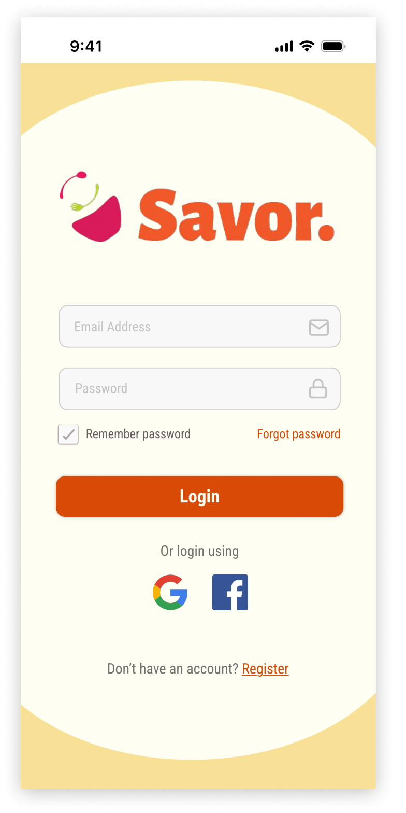
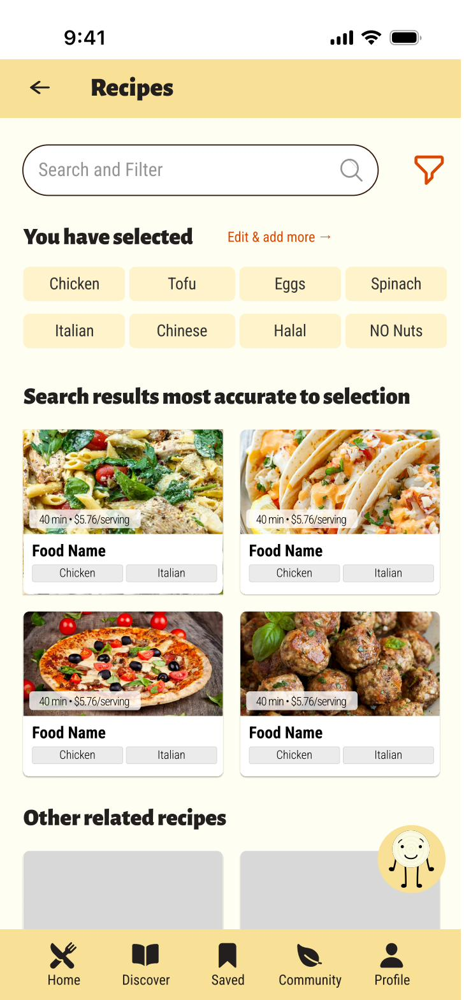
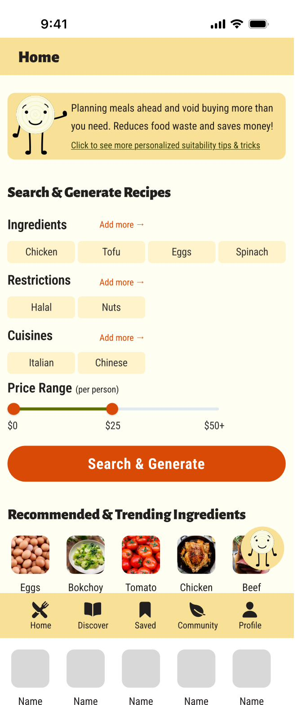

The Problem
College Students Waste Food — But Not for Reasons You'd Think
Food waste apps tend to moralize. "Save the planet. Reduce waste." But that framing doesn't land for a 20-year-old living on $25/week. They're not indifferent to food waste — they just care about something more immediate: running out of money before the end of the month.
As design lead, I challenged the team to reframe our product around what users actually care about, not what we thought they should care about.
Research
37 Survey Responses. One Key Insight.
I designed and fielded a 12-question survey targeting college students aged 20–24. 37 responses. Key findings:
The Reframe
Users don't care about food waste in the abstract. They care about wasting money. Every design decision flowed from this: ingredient-first search (use what you have), barcode scanner (know what you're buying), grocery list integration (don't overbuy). Sustainability as a byproduct of frugality — not as a lecture.
App Design
Core Features

Ingredient-First Search
The core loop: enter what you have (or scan a barcode), get recipes that use those ingredients. No more buying specialty items for a single recipe, then watching them go bad.
Recipes are ranked by how many ingredients you already own — minimizing the shop and maximizing what's already in your fridge.

Chef Cubby — AI Cooking Assistant
Chef Cubby is the app's AI chatbot, designed around a friendly bear mascot. Ask Cubby anything: "What can I make with eggs, cheese, and leftover rice?" or "How do I make pasta from scratch?"
The conversational interface lowers the barrier to trying new recipes — especially for college students who don't have a culinary vocabulary yet.

Community Forum
Students sharing budget meal wins, recipe hacks, and cooking questions. The community feature makes the app sticky beyond the utility layer — it's where the brand lives and where retention happens.


Grocery list integration (left) and bookmarked recipes (right) — the two most-requested features from survey research.
Visual Design
Warm, Approachable, and Slightly Playful
The yellow-orange palette was chosen to evoke warmth and appetite — the emotional register of a good meal, not a finance app. Rounded components and the Chef Cubby mascot give the app a personality that feels approachable for users who might feel intimidated by cooking.
Accessibility was a priority throughout: all color pairs meet AA contrast standards, and the type scale is generous enough for kitchen use (when your hands are messy, you don't want to squint at your phone).
Reflection
The Research Changed Everything
Savor is the project where I most clearly felt the power of leading with research before design. The original concept was framed around sustainability. The research said: lead with money. Every feature we designed after that insight performed better in user testing because it resonated with what users actually cared about.
The lesson: good research doesn't just inform design — it rescues it from the designer's assumptions.